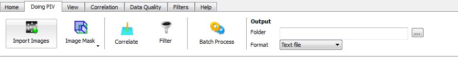

Getting
started with OpenPIV
1. Getting image pairs
The first step to any PIV processing is to get the image pairs
that you will be processing. If you do not have any image
pairs of your own that you wish to use, then we have some
provided at:
2. Importing the image pairs
Once you have one or more image pairs, you need to import them
to the program. To do this, navigate to the "Doing PIV"
tab on the ribbon bar and select the "Import Images" button:

This button launches the image import window in which you can
navigate to the directory containing your image pairs.
Once you have selected your folder, the program will find any
valid image files and display them in a new browser.
In the Image Import browser:
- If there are no
images you wish to remove from this list, click Import and
your images will be divided automatically into image
pairs.
- If you wish to
import only part of the list, select those images and click
Import.
- To remove images:
select the images you wish to remove, right-click and follow
the prompts.
3. Setting up processing parameters
The default settings are for interrogation windows of 32x32
pixels2 and 50% overlap. These settings are
easily changed by navigating to the "Correlation" tab on the
ribbon bar and using the drop-down menu and forms that can be
found there. For more detail on the processing parameters,
see here.
4. Processing
To process the images, return to the "Doing PIV" tab on the
ribbon bar and click the "Correlate" button:

5. Filtering
There are default filter settings which should be suitable for
some users; however, changes can be made by navigating to the
"Filters" tab on the ribbon bar. For details on the
filtering parameters, see here.
Once the filter settings are set, navigate back to the "Doing
PIV" tab on the ribbon bar and click the "Filter" button:

6. You're done!
If every step worked, you should now have a correlated image
pair displayed in the viewer with a text file called
"OpenPIV00000.dat" in the directory which contained your image
pairs (unless you've changed the output directory). For
more details on how data is output, see here.